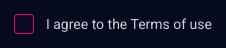
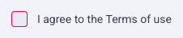
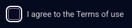
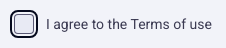
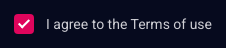
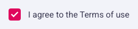

Checkbox
A box that holds a yes, with its label or alone: the Field's declaration, a card's tick, a filter's row. It is the native checkbox drawn by one file, so the keyboard and a screen reader keep a real control. Everything on this page is drawn by design/system/components/checkbox.css through index.css, the same file a screen will load.
Anatomy
| Part | Class or element | What to change there |
|---|---|---|
| The press | .check (a label) | the gap to the words, the body ink, the 14px line; the whole label is the target |
| The box | .check > input | the native input drawn by the file: size --size-check, corner --radius-xs, the tile's fill and a hairline ring |
| The tick | input:checked::after | a drawn corner in white on the act's pink; the box fills when it is ticked |
| The words | any element after the input, or none | the line beside the box: a name, a declaration with its links, a price in a Figure |
Variants and sizes
One form, no size and no emphasis: the box is the same everywhere, and the container sets the row around it. The size below is read from the rendered box, not from the stylesheet.
- Content = with its label, or alone. With a label the words ride in the press, so a thumb has a wide target. Alone (an item card's tick, the cookie layer) the box carries an
aria-labeland nothing else. - Width and the 44px press = the container's. The filter drawer lifts its rows to
--size-tap; the Field's declaration is a roomy row of its own. Neither is a variant of the box.
| Content | At rest | Ticked | Where it stands |
|---|---|---|---|
| With its label | the filter drawer's rows, the Field's declaration | ||
| Alone | an item card's tick; the cookie layer's yes (node 0.4) |
When to use
A checkbox holds a yes that stays until the person changes it and that several rows may hold at once: "I agree to the Terms of use and the Privacy policy", a skin picked for the selection bar, a filter that narrows the shelf. An 18+ declaration and the terms are two checkboxes and no press goes through until both are set (D-26, D-58); the control stays live so the refusal can say what is missing. The words say what the yes is for, in the voice's plain verbs, never a word for the feeling.
Rule and anti-rule
Use it
A declaration before sign in: the box and the sentence it confirms, in one label. Or a skin picked in My items: the box alone on the card's corner, named for a screen reader.
Take another component
One choice among a few is a Radio in a tile, or a Segmented control for a short run. A setting that takes effect the moment it flips is a Switch. A press that does something is a Button. A question that opens its answer is a Disclosure.
States
Live at rest, on this page's theme: point at them, press them, reach them with Tab.
Snapshots of the same instances, dark on the left and light on the right, taken with reduced motion so each shows the face the state settles on. The base set is shot once on the label form; the ticked box is a twin at rest, set by the product's own :checked, and focus is shot on the native input, the element Tab reaches.


--line-act

--line-focus

--bg-act, --text-on-plate- The same answer, said once: the box alone has the same states as the box with its label, and the press is the same ring on the same input. A ticked box under the pointer keeps its fill: hover lights only an unticked ring.
- No active state and no disabled look.
kit.cssdraws no press on a checkbox and none is added. A checkbox stays live and refuses with its reason in the line beside it (D-58), so it draws no refusal ring of its own: the refusal ring (--line-error, D-260) belongs to the Field's declaration row.
node design/kit/tools/shoot-states.js http://localhost:8765/ checkbox # re-shoot after a change to checkbox.css or its tokens node design/kit/tools/shoot-states.js http://localhost:8765/ checkbox --check # step 9: fails if a snapshot drifted
In the code
| Token | Kind | Dark | Light |
|---|
Read live from tokens.css. The box's fill, the label's ink, the act's fill and the tick come from the semantic level; the two rings read the roles the atoms brought, --line-control at rest and --line-act under the pointer, which the Radio and the Button read too (D-264). No component token. Geometry, type and motion come straight from the primitives.
File: design/system/components/checkbox.css, loaded by design/system/index.css in the atoms' group.
<label class="check"><input type="checkbox"><span>I agree to the Terms of use and the Privacy policy.</span></label> <label class="check"><input type="checkbox" aria-label="Select AK-47 Slate, Field-Tested"></label>
Stands on: the catalogue, Deposit, My items. The Field's declaration (Deposit, the case screen's commit, Sign in) wears the same class with its own row around it. Until step 8 those screens still read kit.css; step 6 moves their markup onto this file's forms by the rename map.